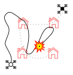
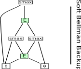
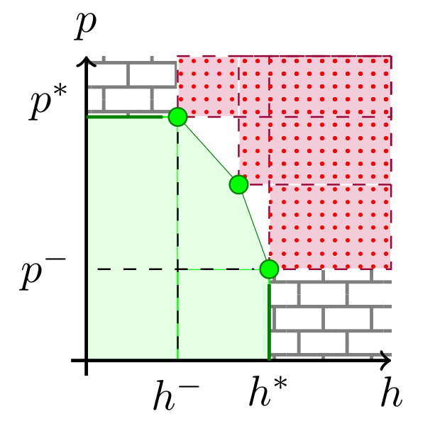
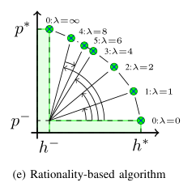
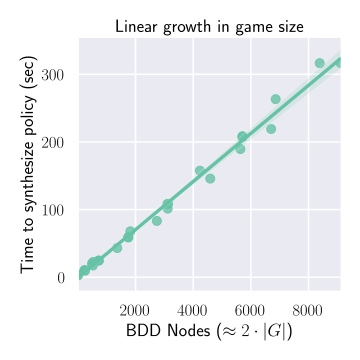
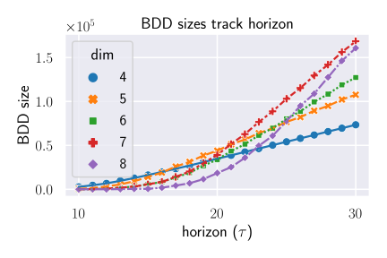

<!DOCTYPE html>
<html>
<head>
<title>RSS 21 Poster</title>
<meta charset='utf-8'>
<meta content='BDD / BAIR Poster Spring 2021.' name='description'>
<link href='https://cdn.jsdelivr.net/npm/katex@0.13.0/dist/katex.min.css' rel='stylesheet'>
<link href='poster.css' rel='stylesheet' type='text/css'>
<script defer src='https://cdn.jsdelivr.net/npm/katex@0.13.0/dist/katex.min.js'></script>
<script defer onload='renderMathInElement(document.body);' src='https://cdn.jsdelivr.net/npm/katex@0.13.0/dist/contrib/auto-render.min.js'></script>
</head>
</html>
<body>
<header>

<div id='title'>
<h1>Entropy Guided Control Improvisation</h1>
<div>
<ol>
<li><strong>Marcell Vazquez-Chanlatte</strong> (marcell.vc@berkeley.edu)</li>
<li>Sebastian Junges</li>
<li>Daniel J. Fremont</li>
<li>Sanjit A. Seshia</li>
</ol>
</div>
</div>
<div id='qr-codes'>
<figure>

<figcaption>CAV 20'.</figcaption>
</figure>
<figure>

<figcaption>RSS 21'.</figcaption>
</figure>
<figure>

<figcaption>Spotlight.</figcaption>
</figure>
</div>
</header>
<main>
<section id='erci'>
<h1>Entropic Control Improvisation</h1>
<p>
Given a dynamics model and horizon T, find a policy that satisfies:
</p>
<ol id='constraints'>
<li id='hard'>
<p><strong>Hard Constraint:</strong></p>
$$\Pr(\xi \in \psi) \geq 1$$
</li>
<li id='soft'>
<p>
<strong>Soft Constraint:</strong>
</p>
$$\Pr(\xi \in \varphi) \geq \mathbf{p}$$
</li>
<li id='rand'>
<p>
<strong>Causal Entropy Constraint:</strong>
</p>
$$H(\mathcal{A}_{1:T} \mid\mid \mathcal{S}_{1:T}) \geq \mathbf{h}$$
</li>
</ol>
<ol>
<li>
Causal entropy (<strong>randomness</strong>) constraint ensures minimal bias.
</li>
<li>
Natural trade off between performance <strong>p</strong> and
randomness <strong>h</strong>.
</li>
</ol>
</section>
<section id='applications'>
<h1>Dynamics Model and Applications</h1>
<div>
<figure>
<figcaption>Stochastic Games</figcaption>

<figcaption>Model workspace as a finite 2.5 player game.</figcaption>
</figure>
<figure>
<figcaption>Inference</figcaption>

<figcaption>Given demonstrations, predict φ.</figcaption>
</figure>
<figure>
<figcaption>Testing</figcaption>

<figcaption>
Declaratively specify environment
for testing.
</figcaption>
</figure>
</div>
<p>
In above settings, a biased policy is <strong>undesirable</strong>.
</p>
</section>
<section>
<h1>Contributions</h1>
<ol>
<li>
Symbolic approach for representing MDPs and Stochastic Games
as <strong>Binary Decision Diagrams</strong>.
</li>
<li>
Improvisation in stochastic games
which support arbitrary <strong>combinations</strong> of
probabilistic 🎲 and adversarial 👿 uncertainty.
</li>
</ol>
</section>
<section id='mdps'>
<h1>Improv in MDPs (CAV 20')</h1>
<p>
<strong>Key Observation:</strong> Can think of soft constraint
as binary reward.
</p>
$$r_\lambda(\xi) \triangleq \lambda \cdot 1[\xi \in \varphi]$$
<ul>
<li>
By adding history to state space, can reduce to
Maximum Causal Entropy Inverse Reinforcement Learning.
</li>
<li>
<strong>Problem:</strong> Potential combinatorial explosion.
</li>
<li>
<strong>Solution:</strong> Encode MDP as a Binary Decision
Diagram.
</li>
</ul>
<ol>
<li>
Write the <strong>composition</strong> of the dynamics and
property as a circuit with access to biased
coins.
<figure>

</figure>
</li>
<li>
Can represent MDP with a Binary Decision Diagram:
<figure id='bdds'>


</figure>
<strong>Conservative size bound:</strong>
$$O(|\text{horizon}|\cdot |S/\varphi|\cdot |\text{Actions}|\log(|\text{Actions}|))$$
</li>
<li>
We show you can efficiently compute maximum causal entropy
policy on compressed MDP.
</li>
</ol>
<p>
<strong>Application:</strong> Used to learn temporal logic constraint
from <strong>unlabeled</strong> demonstrations, e.g.,
</p>
<p id='spec-example'>
φ = "Avoid Lava, eventually recharge, and don't recharge while wet."
</p>
</section>
<section id='sg'>
<h1>Improv in Stochastic Games</h1>
<p>
<strong>Motivation:</strong> Often want to handle combinations
of probabilistic 🎲 and adversarial 👿 uncertainty, i.e.,
Interval MDPs, 2 player MDPs, and model compression.
</p>
<ul id='sg-qa'>
<li data-marker='Q'>
Is efficent improvisation synthesis possible?
</li>
<li data-marker='A'>
Yes! By <strong>recursive entropy matching</strong>.
</li>
</ul>
<p>Efficient via dynamic programming from leafs of BDD.</p>
<ol id='alg-sketch'>
<li>Assume min entropy  👿.</li>
<li>Run MDP to find optimal <strong>h</strong>.</li>
<li>Plan to match <strong>h</strong>.</li>
<li>Approximate Pareto Front.</li>
</ol>
<figure id='pareto'>


</figure>
<ol>
<li>
Pareto Front allows for re-planning locally.
</li>
<li>
Resulting algorithm is efficient in practice.
</li>
</ol>
<figure id='sg-figs'>


</figure>
</section>
<section id='future-work'>
<h1>Future Work</h1>
<ol>
<li>Sampling based algorithms.</li>
<li>POMDPs.</li>
<li>Subset queries.</li>
<li>Dynamic Scenic Constraints.</li>
</ol>
</section>
</main>
<footer></footer>
</body>
